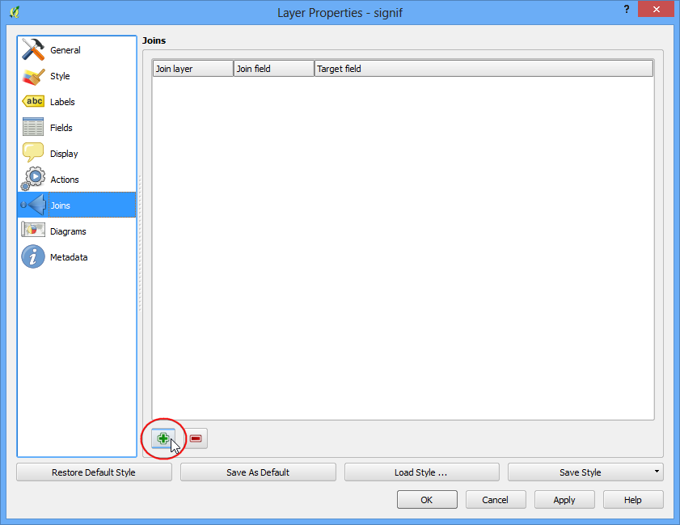
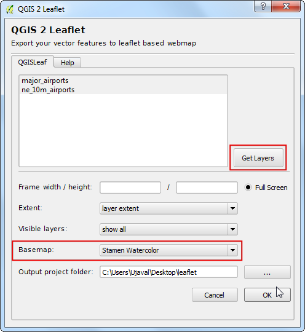
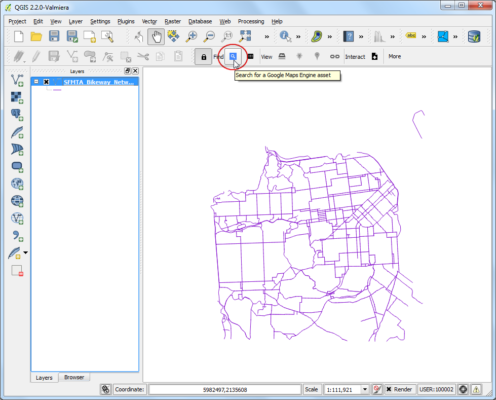

Crearea Hărților Web Leaflet cu ajutorul qgis2leaf
[ Download PDF
A4
Letter ]
Warning
plugin-ul qgis2leaf nu mai este în dezvoltare activă. Funcționalitatea acestui plugin se regăsește într-un nou plugin denumit qgis2web.
Leaflet este o bibliotecă Javascript populară, cu sursă deschisă, pentru construirea de aplicații de cartografiere web. Plugin-ul qgis2leaf oferă o modalitate simplă de a exporta harta QGIS într-o hartă web funcțională, bazată pe Leaflet. Acest plug-in reprezintă o modalitate utilă de a începe cartografierea web și de a crea o harta web interactivă din straturi cu date GIS statice.
Overview of the task
Vom crea o hartă web Leaflet, globală, a aeroporturilor.
Alte competențe pe care le veți dobândi
Folosiți instrucțiunea SQL CASE în Field Calculator, pentru a insera, în câmpurile nou create, valori bazate pe diferite condiții.
Localizarea și utilizarea în QGIS a pictogramelor SVG personalizate.
Procedura
Instalați plugin-ul qgis2leaf mergând la . Rețineți că plugin-ul este marcat în prezent experimental, așa că va trebui să bifați Show also experimental plugins în Setările Plugin-ului. (Pentru mai multe detalii despre instalarea plugin-urilor în QGIS, parcurgeți Utilizarea Plugin-urilor)

Dezarhivați fișierul descărcat ne_10m_airports.zip. Deschideți QGIS și mergeți la . Navigați în locația unde s-au extras fișierele și selectați ne_10m_airports.shp. Clic pe OK.

O dată ce s-a încărcat stratul ne_10m_airports, folosiți instrumentul Identify pentru a efectua clic pe oricare entitate, și pentru a-i viziona atributele. Vom crea o hartă în care aeroporturile vor fi clasificate în 3 categorii. Atributul type va fi util pentru clasificarea entităților.

Clic-dreapta pe stratul ne_10m_airports, apoi selectați Open Attribute Table.

În fereastra de dialog, apăsați pe butonul Toggle Editing. O dată ce stratul a intrat în modul de editare, faceți clic pe butonul Open Field Calculator.

Vrem să creăm un nou atribut numit type_code în care vom aloca marilor aeroporturi valoarea 3, celor mijlocii valoarea 2, și tuturor celelalte valoarea 1. Putem folosi instrucțiunea CASE pentru a scrie o expresie care va citi valoarea atributului type și va crea un atribut type_code bazat pe condiția formulată. Bifați caseta Create a new field și introduceți type_code ca Output field name. Selectați Whole number (integer) ca Output field type. În fereastra Expression introduceți următorul text.
CASE WHEN "type" LIKE '%major%' THEN 3
WHEN "type" LIKE '%mid%' THEN 2
ELSE 1
END

Înapoi, în fereastra Attribute Table, veți vedea la capăt o nouă coloană. Verificați dacă expresia lucrează corect, și faceți clic pe butonul Toggle Editing pentru a salva modificările.

În continuare, vom stiliza stratul aeroporturilor folosind atributul type_code, nou creat. Clic-dreapta pe stratul ne_10m_airports, apoi selectați Properties.

Selectați fila Style din fereastra de dialog Layer Properties. Selectați stilul Categorized din meniul drop-down și alegeți type_code pentru Column. Alegeți, după dorință, o gamă de culori, apoi faceți clic pe Classify. Apăsați OK pentru a merge înapoi în fereastra principală a QGIS.

Veți vedea o hartă a aeroporturilor, frumos stilizată. Haideți să o exportăm, pentru a crea o hartă web interactivă. Mergeți la .

În fereastra de dialog QGIS 2 Leaflet, faceți clic pe Get Layers pentru a obține o listă de straturi, actualizată. Selectați opțiunea Full screen pentru a vedea harta web acoperind tot ecranul. Alegeți layer extent ca Extent al hărții exportate. Alegeți un Output project folder de pe sistemul dvs, în care ar trebui sa fie scrise fișierele de ieșire. Faceți clic pe OK.

O dată ce s-a încheiat procesul de export, localizați folderul de ieșire de pe disc. Deschideți fișierul index.html într-un browser. Veți vedea o hartă web interactivă, care este o replică a hărții QGIS. Puteți mări și deplasa harta și, de asemenea, să faceți clic pe orice entitate, pentru a obține o fereastră de tip pop-up cu informații ale atributelor. Puteți copia conținutul acestui dosar într-un server web, pentru a avea o hartă web a entităților completă.

În continuare, vom explora unele caracteristici avansate ale acestui plugin, care vor permite personalizarea ulterioară a hărții. Dacă ați observat, pop-up-ul cuprinde toate atributele entității. Unele atribute nu sunt foarte utile iar, în ansamblu, pop-up-ul nu arată prea bine. Pentru a-l îmbunătăți, putem înlocui pop-up-ul implicit cu propriul nostru HTML personalizat. Acest lucru se realizează prin adăugarea de cod HTML propriu într-o coloană numită html_exp. Faceți clic-dreapta pe stratul ne_10m_airports, apoi selectați Open Attribute Table.

În fereastra de dialog, apăsați pe butonul Toggle Editing. O dată ce stratul a intrat în modul de editare, faceți clic pe butonul Open Field Calculator.

Bifați caseta Create a new field și introduceți html_exp ca Output field name. Alegeți Text (string) ca Output field type. Din moment ce se va crea un șir HTML lung, alegeți 200 ca Output field width. Introduceți următoarea expresie în zona Expression. Expresia cu aparență complexă, pur și simplu definește un tabel HTML și substituie valorile din celule cu atributele iata_code, name și type. Verificați Output preview pentru a vă asigura că expresia este corectă.
concat('<h3>', "iata_code", '</h3><table>', '<tr><td>Airport Name: <b> ',
"name", '</b></td></tr><tr><td>Category: <b> ', "type",
'</b></td></tr></table>')
Note
Formatul fișierului shape poate conține maxim 254 de caractere într-un câmp. Dacă doriți să stocați un text mai lung într-un câmp, atunci alegeți un alt format.

Înapoi, în fereastra Attribute Table, veți vedea la capăt o nouă coloană. Verificați dacă expresia lucrează corect, și faceți clic pe butonul Toggle Editing pentru a salva modificările.

Acum, exportați harta iarăși, folosind .

Alegeți opțiunile la fel ca înainte.

Mergeți la dosarul de ieșire o dată ce procesul de export s-a încheiat. Veți avea un subfolder cu amprenta de timp curentă. Localizați fișierul index.html din interiorul acestuia, și deschideți-l într-un browser. Faceți clic pe orice entitate și analizați pop-up-ul. Veți observa că pare mult mai curat și informativ.

O altă caracteristică utilă a plugin-ului qgis2leaf este abilitatea de a specifica o pictogramă proprie pentru a o utiliza cu harta web. Acest lucru este realizat prin specificarea căii pictogramei personalizate într-un câmp numit icon_exp. Vom crea un nou strat care conține numai marile aeroporturi și-l vom stiliza folosind o pictogramă SVG personalizată. Localizați instrumentul Select features using an expression în bara de instrumente.

Introduceți expresia de mai jos și apăsați Select pentru a obține toate aeroporturile majore.

Clic-dreapta pe stratul ne_10m_airports, apoi alegeți Save Selection As....

În fereastra de dialog Save vector layer as..., denumiți fișierul de ieșire ca major_airports.shp. Bifați Add saved file to map și faceți clic pe OK.

O dată ce s-a încărcat în QGIS stratul major_airports, faceți clic-dreapta pe numele lui și selectați Open Attribute Table.

În fereastra de dialog, apăsați pe butonul Toggle Editing. O dată ce stratul a intrat în modul de editare, faceți clic pe butonul Open Field Calculator.

În fereastra de dialog Field Calculator, introduceți icon_exp ca Output field name. Alegeți tipul Text (string). În zona Expression introduceți următoarea expresie.

Salvați modificările făcând clic pe butonul Toggle Editing din Attribute Table.

Deschideți plugin-ul qgis2leaf din . Clic pe butonul Get Layers pentru a prelua ambele straturi din QGIS. Există mai multe straturi de diferite plăci prefabricate disponibile pentru hărțile de bază. În această hartă, putem încerca ceva diferit, încărcând Stamen Watercolor ca Basemap. Clic pe OK.

Dacă vă amintiți, am specificat airport.svg ca pictogramă pentru aeroporturi. Trebuie să adăugăm acea pictogramă, în mod manual, în directorul de ieșire. QGIS vine cu o colecție mare de pictograme. În Windows, aceste pictograme sunt situate în . Calea poate diferi, în funcție de platformă și de tipul de instalare. Localizați acel director și alegeți pictograma care vă place. Pentru harta noastră, putem încerca pictograma amenity=airport.svg situată sub categoria transport.

Copiați și inserați această pictogramă în directorul de ieșire pe care l-ați specificat când ați exportat harta. Redenumiți-o ca airport.svg.

În continuare, deschideți fișierul index.html situat în folder. Veți vedea o frumoasă hartă de bază, având pictograma aleasă de noi pentru marile aeroporturi. De asemenea, observați panoul straturilor din colțul din dreapta sus, care controlează afișarea ambelor straturi.

Hope this tutorial gives you a head start in creating web maps. Below is the
live interactive map created for this tutorial.